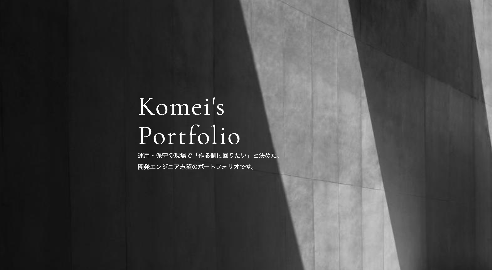

Komei's
Portfolio
運用・保守の現場で「作る側に回りたい」と決めた、
開発エンジニア志望のポートフォリオです。
ABOUT
田川孔明です。高校卒業後、美容師として約6年間、店舗でお客様の対応と後輩の指導を担当しました。
2025年1月にIT業界へ転身し、現在はインフラエンジニアとして、
お客様先でスポーツくじの運用・保守に携わっています。
運用の中で、Excel VBAと生成AIを使って選定作業の補助ツールを作り、
1回あたり1〜2時間かかっていた作業を最大20〜30分短縮しました。
自分で考えた仕組みが実際に動いて役に立った経験から、運用する側ではなく
作る側に回りたいと考えるようになりました。
現在はHTML・CSSでこのサイトを作り、次はJavaの学習に進みます。
運用の現場で「システムが止まると誰がどう困るか」を見てきた経験を、
作る側で活かしたいと考えています。
SKILL
Web（学習中）
-
・HTML / CSS — 本サイトを構成から実装まで自作。
レスポンシブ対応（2段階のブレークポイント）
・次に学ぶ言語：Java
業務効率化ツールの作成
-
・Excel VBA・関数、PowerShell / bat、生成AI
・現場で4つのツールを作成。
選定補助ツール：1回あたり1〜2時間 → 最大20〜30分短縮
前の現場の3ツール：1作業あたり5〜20分短縮
インフラ
-
・客先常駐での運用・保守 1年8ヶ月（金銭を扱うシステムの無事故運用）
・ネットワークの基礎（入社後研修）
その他
- ・美容師免許
WORKS

My Portfolio（本サイト）
HTML / CSS
目的：転職活動用に、自分の経歴と「なぜ開発に進むのか」を伝えるサイトとして制作。
構成：HOME → ABOUT → SKILL → WORKS → CONTACT の1ページ構成。
工夫：FlexboxやGridを使ってレイアウトを構成し、799px / 500px の2段階で画面幅に応じた表示に調整。
画像には object-fit: cover を使用し、表示領域に合わせて調整。
AIの使い方：構成・文章は自分で考え、CSSは迷った箇所を生成AIを活用して修正。
つまずいた点：スマホ表示でレイアウトが崩れた → メディアクエリを使い、画面幅に応じて配置や余白を調整。
ソースコード：
GitHubで見る